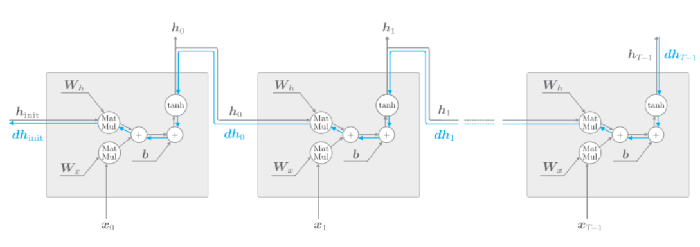
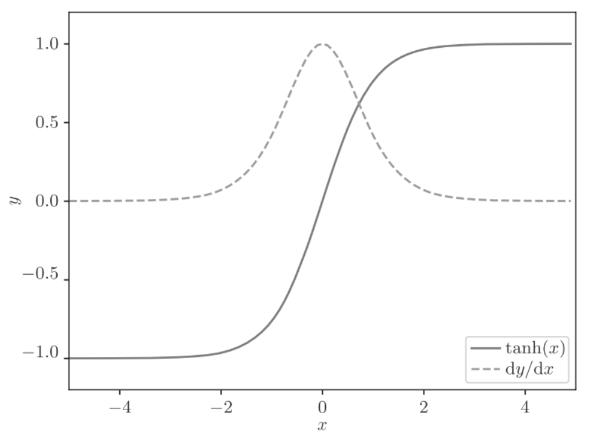
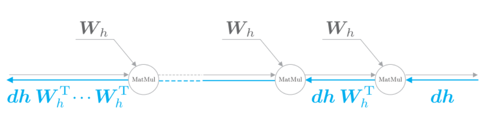
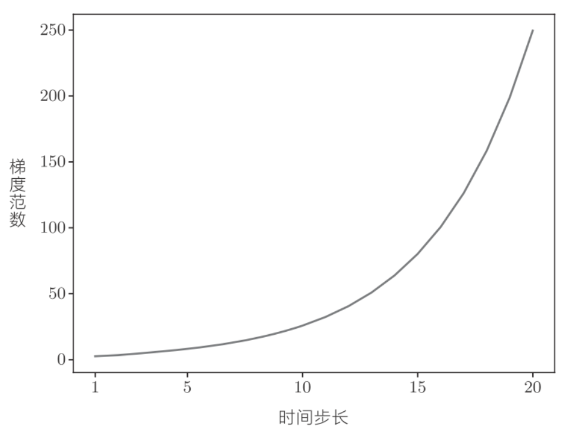
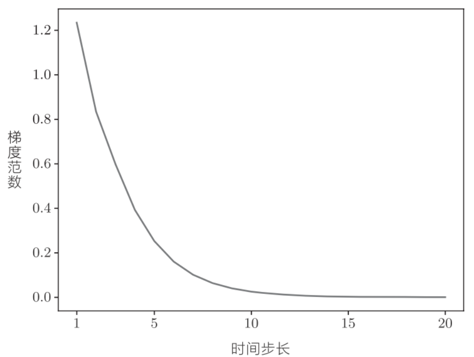

deeplearn_gradproblem

这里考虑长度为T的时序数据, 时间方向上的梯度, 可以反向传播经历了tanh, “+”, MatMul运算.
"+"的反向传播会将上游的穿戴的梯度原样传给下游, 因此梯度值不变.
“tanh”
当时, 导数是, 如下图:

虚线是导数, 可以看出, 它的值小于1, 并且随着x远离0, 它的值在变小. 当反向传播的梯度过tanh节点时, 它的值会越来越小. 因此如果经过tanh函数T次, 则梯度也会减小T次
MatMul
这里我们忽略tanh的计算

从上游传来的梯度为, 此时通过MatMul节点的反向传播通过矩阵乘积计算梯度. 之后, 根据时序数据的时间步长, 将计算重复相应次数. 注意, 每次矩阵乘积计算都是使用相同的权重.
通过python来实验, 反向传播时梯度的值通过MatMul节点时的变化.
import numpy as np
import matplotlib.pyplot as plt
N = 2 # mini-batch的大小
H = 3 # 隐藏状态向量的维数
T = 20 # 时序数据的长度
dh = np.ones((N, H))
np.random.seed(3) # 为了复现，固定随机数种子
Wh = np.random.randn(H, H)
norm_list = []
for t in range(T):
dh = np.dot(dh, Wh.T)
norm = np.sqrt(np.sum(dh**2)) / N
norm_list.append(norm)np.ones()初始化dh.然后根据反向传播的MatMul节点的数量更新dh相应次数, 并将各步的dh的大小添加到norm_list中.dh的大小是mini-batch中的平均L2范数.

如图, 梯度的大小随着时间步长呈指数级增加, 这就是梯度爆炸(exploding gradients). 梯度爆炸会导致溢出, 出现
NaN之类的值.
下面实现梯度消失, 将Wh的值改一下.
# Wh = np.random.randn(H, H) # before
Wh = np.random.randn(H, H) * 0.5 # after
如图, 梯度的大小随着时间步长呈指数级减小, 这就是梯度消失(vanishing gradients). 梯度消失会导致权重不能被更新, 模型无法学习长期的依赖关系.
如果Wh是标量, 当Wh大于1时, 梯度呈现指数级增加, 当Wh小于1时, 梯度呈指数级减小.
如果Wh是矩阵时, 矩阵的奇异值将成为指标. 奇异值表示数据的离散程度, 根据奇异值是否大于1, 可以预测梯度大小的变化. 如果奇异值的最大值大于1, 则梯度很有可能会呈现指数级增加, 如果奇异值的最大值小于1, 则梯度会呈指数级减小. 奇异值大小只是必要条件, 分充分条件.
梯度爆炸对策
解决梯度爆炸的方法是,梯度裁剪(gradients clipping), 伪代码:
这里假设可以将神经网络用到的所有参数的梯度整合成一个, 并用符号表示. 贾昂阈值设置为threshold. 如果梯度的L2范数大于或等于阈值, 就按照上面的方法修正梯度.
python实现:
import numpy as np
dW1 = np.random.rand(3, 3) * 10
dW2 = np.random.rand(3, 3) * 10
grads = [dW1, dW2]
max_norm = 5.0
def clip_grads(grads, max_norm):
total_norm = 0
for grad in grads:
total_norm += np.sum(grad ** 2)
total_norm = np.sqrt(total_norm)
rate = max_norm / (total_norm + 1e-6)
if rate < 1:
for grad in grads:
grad *= rate
clip_grads(grads, max_norm)参数 grads 是梯度的列表，max_norm 是阈值，
梯度消失对策
使用lstm